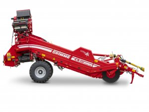
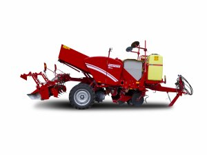
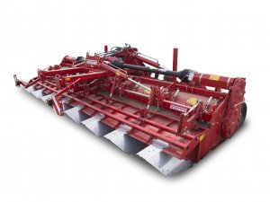
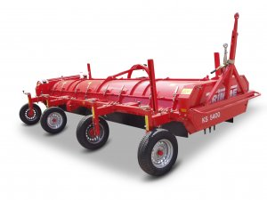
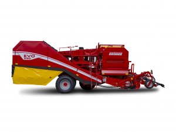
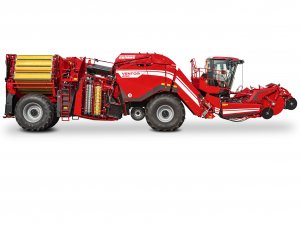
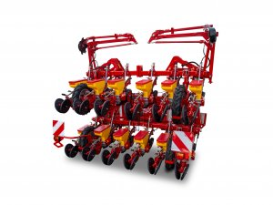
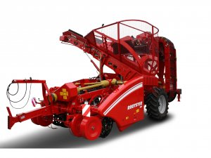
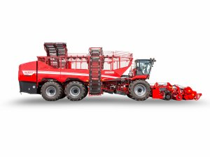

| ELVÁLASZTÓ TECHNOLÓGIA | ÜLTETÉSI TECHNOLÓGIA | TALAJMŰVELÉS |
|---|---|---|
|
A talaj munkállatok: FONTOS!! a talaj porhanyóssága. |
Az ültetés csak is az erre a célra kitalált eszközzel és géppel lehetséges a hatékony és minőségi munkáért! |
A talaj átmozgatása ültetés után elengedhetetlen a szelős talaj miatt! |
|  |  |  |
| BETAKARÍTÁS ELŐKÉSZÍTÉSE | BETAKARÍTÁSI TECHNOLÓGIA | ÖNJÁRÓ BETAKARÍTÓGÉP |
|---|---|---|
|
A betakarítás elött tüntessük el a kemény szár maradványokat ezt az önjáró gépek elvégzik maguktól! |
A traktor után kötött vontatott betakarítás! |
A betakarítás könnyítése az önjáró betakarítógépek segítenek! |
|  |  |  |
| VETŐTECHNOLÓGIA | BETAKARÍTÁSI TECHNOLÓGIA | ÖNJÁRÓ BETAKARÍTÓGÉP |
|---|---|---|
|
Az ületése igen speciális vetőgéppel hajtható végre! |
A traktor után kötött vontatott betakarítás! |
A betakarítás könnyítése az önjáró betakarítógépek segítenek! |
|  |  |  |